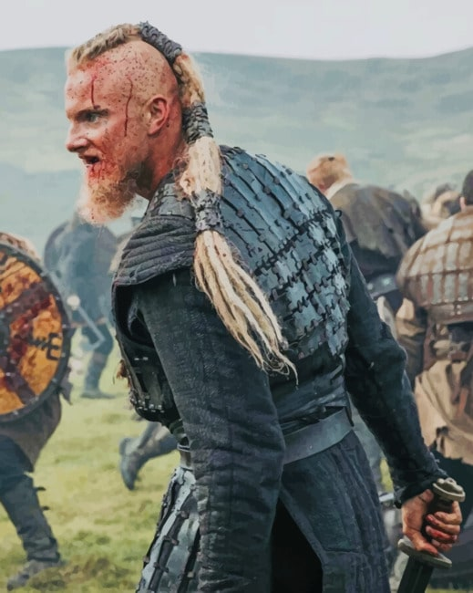
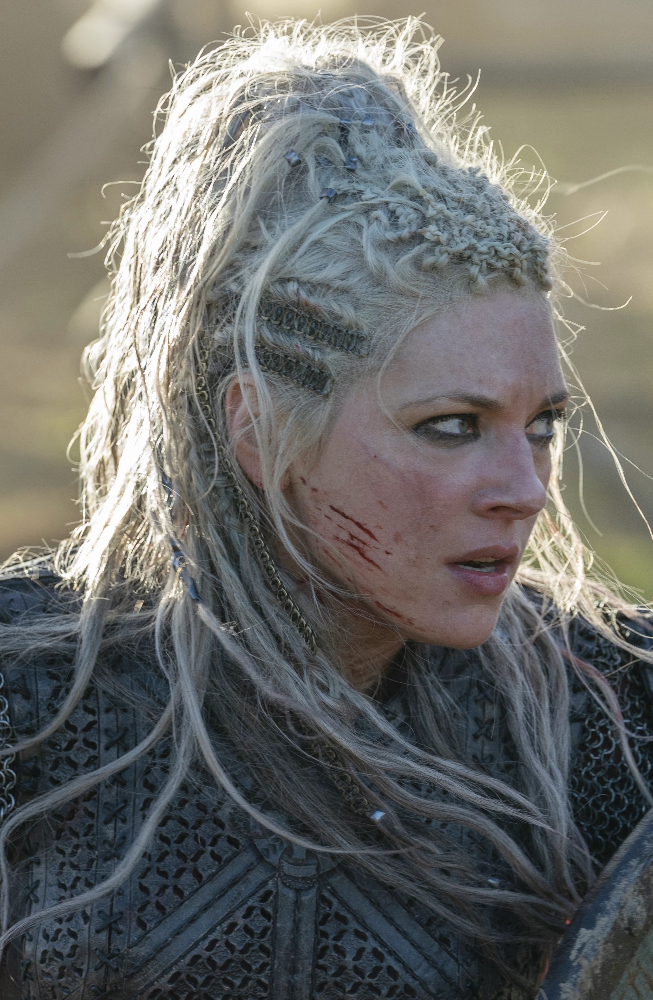
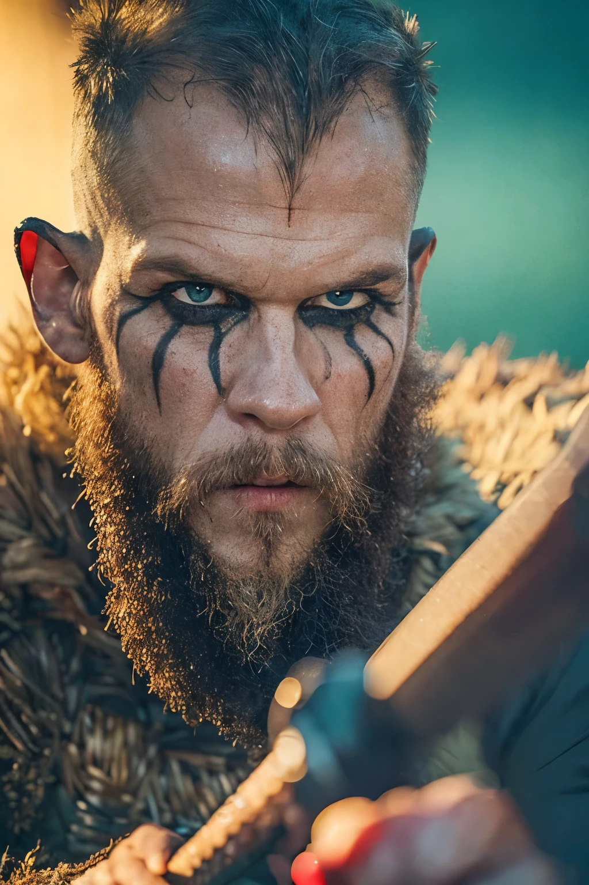

THE FALLEN
Ragnar Lothbrok

Ragnar Lothbrok was once a well known farmer who one day became the most famous viking king of Sweden and Danmark.
Bjorn (ironside) Ragnarsson

Bjorn Ironside, son of Ragner Lothbrok was a powerful and very strategic viking cheif and later on became king of Sweden.
Lagertha

Lagertha was a Viking ruler and shield-maiden from what is now Norway, and the onetime wife of the famous Viking Ragnar Lodbrok.
Ivar the Boneless

Ivar the Boneless, also known as Ivar Ragnarsson, was a Viking leader who invaded England and Ireland.
Hrafna Floki

Hrafna Floki, also known as Raven Floki the boat builder. who has sailed the seas through out nothern europe.